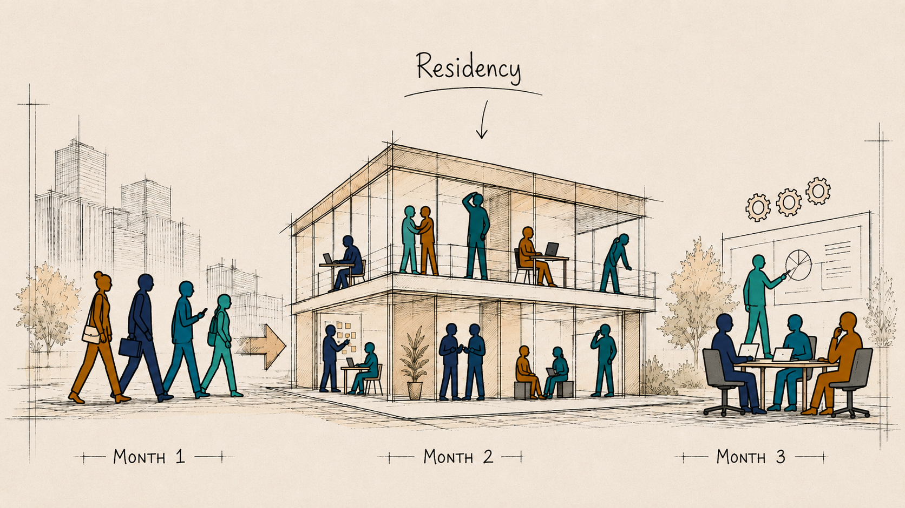

Three months. Capability built inside the work.
The 1-Day opens the door. The Sprint is where capability and results compound, three months of work wrapped around a three-day Residency, so the new way of working gets embedded and stays.

Zone 02 / The arc of the Sprint
Before · weeks 1 to 4Define
We define the use cases with you, build the story, map the stakeholders, and work 1:1 with every participant at the Drawing Board. People tell us individually what they would never say in front of peers and boss, and that becomes the diagnostic data the room runs on. The Residency only works because of what happens before it.
The core · 3 daysThe Residency
Your team, in one place, on your real problems and your real data. A month’s work in three days, and somewhere in the middle the realisation that speed was the smallest part of it.
After · weeks 5 to 12Embed
Office hours, masterclasses, one-to-ones, ambassador roles, weekly rhythms, and the measurement of what actually changed. Adoption is what happens after the room.
Zone 03 / What you leave with
Sovereignty, the capability, and the artefacts to prove it.
Sovereignty starts with you and your team, your judgment, your access, your agency, built over the quarter until it is yours to keep. And it shows as adoption that takes root.
AI sovereignty, and adoption that takes root.
Judgment, access and agency your team owns. After the Residency, the first team self-organised ambassador roles and a weekly sync without being asked. A way of working that survives Monday.
The Org Mirror.
Windows into your culture, workflows and handovers, seen through lenses your organisation has never had. AI works like an MRI with contrast. The body is unchanged, and the pattern that was always there becomes impossible to miss. Then it runs harder.
Tailored instruments, per client, per meeting.
A 73-point positioning model became an asynchronous voting instrument that replaced more than ten hours of debate with an hour of focused, individual judgment.
Board-ready artefacts from the room.
Working demos, cases, maps and multimedia. Evidence of what has been built. Zero slide decks.
Exemplary deliverables from previous Sprints.
- Your missing middle, built and running. Named owners for quality, decision rights for where the machine and the expert disagree, and a place where what the team learns is kept. The part that decides whether the three rebuilt workflows are still running in six months.
- Three priority workflows identified, rebuilt and running with AI inside them, chosen by the team.
- Handover packages accelerated from months to days, with the receiving side pressure-testing them in the room.
- A clickable KPI dashboard mockup built by the team itself, interfacing with their existing tooling.
- 3 to 5x reported speed on research, drafts and mockups, and a backlog cleared that had been immovable for months.
Imagine someone promises to serve you the most amazing dessert you ever ate, and this guy is just describing it to you. The ah moment comes when you taste it. Being here creates the moment when you taste the dessert in real life.Participant · regulated European energy client
Zone 04 / Why residential
AI gives you speed. The house gives you depth.
Because AI compresses screen work so effectively, the human work can finally expand. People eat together, argue over the artefacts their AI creates, take walks between sessions, have the conversation at 10pm that changes the project direction. This is a house. You come to it to challenge yourself, challenge each other, and challenge the way you have been working.
After the Residency, the group self-organised its next steps without being asked, ambassador roles in their home teams, and a weekly sync they set up themselves. That is what adoption taking root looks like, and it is rare.Engagement retrospective, first client
Zone 05 / Next
It all starts with one day.
We rarely sell the Sprint cold. Experience the 1-Day first, then decide with evidence.
See the 1-Day Experience →The Brief: the thinking behind the Sprint, to read or share →